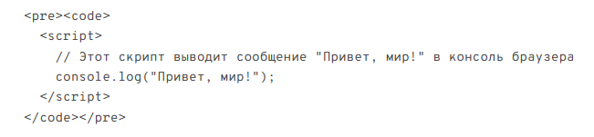
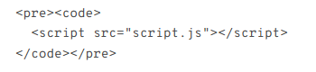

JavaScript – это язык программирования, который обеспечивает взаимодействие с веб-страницами. Он может использоваться для создания динамического содержимого, управления анимациями, обработки форм и др.
JavaScript код может быть встроен непосредственно в HTML страницу с помощью тега Вот пример простого скрипта:
Данный код выведет сообщение "Привет, мир!" в консоль разработчика браузера. Это основной способ, которым JavaScript взаимодействует с окружающей средой.
JavaScript код также может быть размещен в отдельных файлах с расширением .js, которые затем подключаются к HTML с помощью атрибута src в теге Вот пример:
Файл "script.js" содержит JavaScript код, который будет выполнен при загрузке страницы. Это позволяет разделять код JavaScript и HTML, что облегчает его поддержку и повторное использование.
JavaScript имеет множество функций и возможностей, но есть несколько основных концепций, с которыми полезно ознакомиться:
Переменные и типы данных: переменные в JavaScript используются для хранения и манипуляции данными, а типы данных определяют вид информации, которую можно хранить в переменных.
Операторы: операторы используются для выполнения различных операций, таких как арифметические вычисления, сравнения и логические операции.
Функции: функции в JavaScript позволяют группировать повторяющийся код вместе, что делает его более организованным и повторно используемым.
Условные выражения и циклы: условные выражения позволяют делать решения в зависимости от определенных условий, а циклы позволяют выполнять повторяющиеся действия.
Это лишь небольшая введение в JavaScript, но с этими базовыми концепциями можно начать понимать и использовать язык программирования JavaScript на практике.